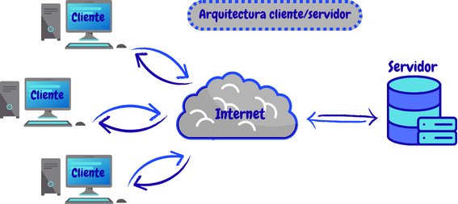
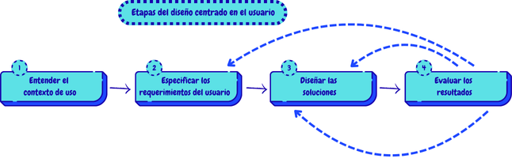

Arquitectura cliente/servidor
La arquitectura Cliente/Servidor en el diseño web, es un modelo que se compone de dos partes principales, el cliente y el servidor.
El cliente es la parte que realiza las peticiones, su interacción se da con las interfaces gráficas de una página o una aplicación por medio de ordenadores, celulares, tables, entre otros, mientras que el servidor es una máquina robusta encargada de interactuar con su bases de datos para procesar y suministrar la información que solicita el cliente. En esta arquitectura, el usuario envía peticiones al servidor cada vez que quiere ver una página, mandar información o recibir datos y el servidor por su parte, recibe esas solicitudes, realiza su proceso de búsqueda de la información en su base de datos y finalmente envía una respuesta clara al cliente.
Ventajas
• La información es gestionada en el servidor ya que este cuenta con protocolos de seguridad muy robusto que impiden que los datos en especial los sensibles puedas ser vulnerados.
• Al realizar actualizaciones en el servidor el cliente la mayoría de las veces las recibe de manera automática y no se hace necesaria una nueva instalación del programa.
• Las interfaces gráficas con las que interactúa son por lo general intuitivas y facilitan su uso.
Desventajas
• Siempre van a depender de una conexión para poder trabajar porque si ella se pierde la interacción.
• Los costos del mantenimiento y la infraestructura de los servidores es bastante elevado debido a que para su buen funcionamiento se necesitan maquinas muy robustas capaces de gestionar un gran volumen de datos y profesionales con un alto conocimiento para sus reparaciones.
• El aumento de usuarios con peticiones recurrentes puede afectar el servidor saturándolo, haciendo el rendimiento se vea afectado.
Diseño centrado en el usuario
El diseño centrado en el usuario es una metodología que se centra en la necesidades del usuario para el desarrollo de un software o producto, incluyéndolos en cada etapa del proceso, con el fin de garantizar una experiencia agradable al momento de su uso.

Etapas del diseño centrado en el usuario
1. Entender el contexto de uso
Básicamente como su nombre los indica, en esta etapa lo que se hace es una investigación que permita conocer el contexto en que el software o producto será usado, algunos mecanismos empleados para esta investigación son encuestas, entrevistas o por medio de observación.2. Especificar los requerimientos del usuario
En esta etapa, definen y documentan los requerimientos del usuario, con el fin de que en la siguiente etapas se tenga claridad de lo que se debe diseñar y se puedan cumplir las expectativas del cliente al máximo.3. Diseñar las soluciones
Después de definir los requerimientos, se procede a diseñar prototipos acordes a lo requerido por el usuario, dando soluciones mas acordes a sus necesidades hasta llegar al diseño terminado.4. Evaluar los resultados
Finalmente, los prototipos son puestos a prueba con el fin de conocer si se tuvo un nivel muy cercano a lo requerido por el usuario, en caso de no ser así se verificaría el paso dos o tres para hacer los ajustados necesarios y que el prototipo pueda ser optimizado.Importancia de la investigación en el entorno para el análisis de requisitos
La investigación del entorno es fundamental para el análisis de requisitos porque nos ayuda a comprender de manera mas clara todo el contexto en que se va a desarrollar el software. Esta investigación nos permite tener información de necesidades del usuario, costos, normativas, expectativas del usuario y otras cosas que permiten minimizar los riegos durante el proceso de construcción del proyecto y crear soluciones para una mejora continua.